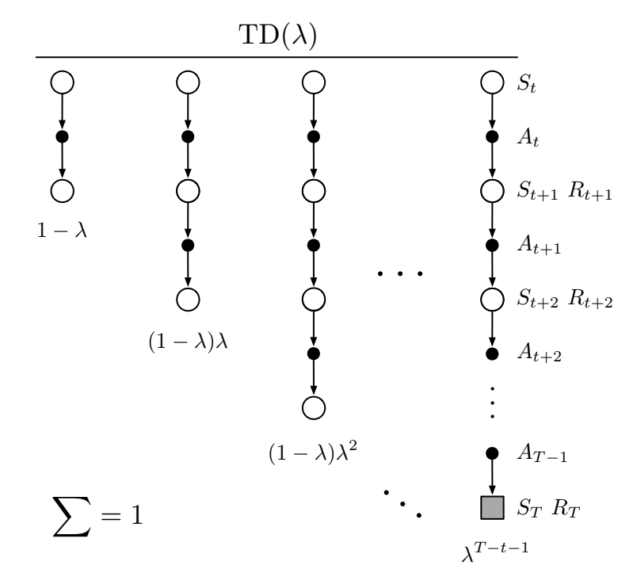
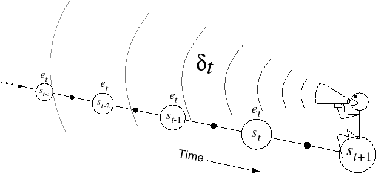

Deep Reinforcement Learning
Temporal Difference learning
Temporal-Difference (TD) learning
- MC methods wait until the end of the episode to compute the obtained return:
V(s_t) \leftarrow V(s_t) + \alpha (R_t - V(s_t))
- If the episode is very long, learning might be very slow. If the task is continuing, it is impossible.
- Considering that the return at time t is the immediate reward plus the return in the next step:
R_t = r_{t+1} + \gamma \, R_{t+1}
we could replace R_{t+1} by an estimate, which is the value of the next state:
V^\pi(s_{t+1}) = \mathbb{E}_\pi [R_{t+1} | s_{t+1}=s]
- This gives us:
R_t \approx r_{t+1} + \gamma \, V^\pi(s_{t+1})

Temporal-Difference (TD) learning
- Temporal-Difference (TD) methods simply replace the actual return by an estimation in the update rule:
V(s_t) \leftarrow V(s_t) + \alpha \, (r_{t+1} + \gamma \, V(s_{t+1}) - V(s_t))
where r_{t+1} + \gamma\, V(s_{t+1}) is a sampled estimate of the return.
- The quantity
\delta_t = r_{t+1} + \gamma \, V(s_{t+1}) - V(s_t)
is called equivalently the reward prediction error (RPE), the TD error or the advantage of the action a_t.
It is the difference between:
the estimated return in state s_t: V(s_t).
the actual return r_{t+1} + \gamma \, V(s_{t+1}), computed with an estimation.
If \delta_t > 0, it means that we received more reward r_{t+1} than expected, or that we arrived in a state s_{t+1} better than expected. We should increase the value of s_t as we underestimate it.
If \delta_t < 0, we should decrease the value of s_t as we overestimate it.
Bias-variance trade-off
- The TD error is used to evaluate the policy:
V(s_t) \leftarrow V(s_t) + \alpha \, (r_{t+1} + \gamma \, V(s_{t+1}) - V(s_t)) = V(s_t) + \alpha \, \delta_t
- If \alpha is small enough, the estimates converge to:
V^\pi(s) = \mathbb{E}_\pi [r(s, a, s') + \gamma \, V^\pi(s')]
By using an estimate of the return R_t instead of directly the return as in MC,
we increase the bias (estimates are always wrong, especially at the beginning of learning)
but we reduce the variance: only r(s, a, s') is stochastic, not the value function V^\pi.
We can therefore expect less optimal solutions, but we will also need less samples.
better sample efficiency than MC.
worse convergence (suboptimal).

SARSA: On-policy TD control
- SARSA (state-action-reward-state-action) updates the value of a state-action pair by using the predicted value of the next state-action pair according to the current policy.

- When arriving in s_{t+1} from (s_t, a_t), we already sample the next action:
a_{t+1} \sim \pi(s_{t+1}, a)
- We can now update the value of (s_t, a_t):
Q(s_t, a_t) \leftarrow Q(s_t, a_t) + \alpha \, (r_{t+1} + \gamma \, Q(s_{t+1}, a_{t+1}) - Q(s_t, a_t))
The next action a_{t+1} will have to be executed next: SARSA is on-policy. You cannot change your mind and execute another a_{t+1}.
The learned policy must be \epsilon-soft (stochastic) to ensure exploration.
SARSA converges to the optimal policy if \alpha is small enough and if \epsilon (or \tau) slowly decreases to 0.
SARSA: On-policy TD control
while True:
Start from an initial state s_0 and select a_0 using the current policy \pi.
foreach step t of the episode:
Apply a_{t}, observe r_{t+1} and s_{t+1}.
Select a_{t+1} using the current stochastic policy \pi.
Update the action-value function of (s_t, a_t):
Q(s_t, a_t) \leftarrow Q(s_t, a_t) + \alpha \, (r_{t+1} + \gamma \, Q(s_{t+1}, a_{t+1}) - Q(s_t, a_t))
- Improve the stochastic policy, e.g:
\pi(s_t, a) = \begin{cases} 1 - \epsilon \; \text{if} \; a = \text{argmax} \, Q(s_t, a) \\ \frac{\epsilon}{|\mathcal{A}(s_t) -1|} \; \text{otherwise.} \\ \end{cases}
- if s_{t+1} is terminal: break
Q-learning: Off-policy TD control
- SARSA estimates the return using the next action sampled from the learned policy.
R_t \approx r_{t+1} + \gamma \, Q^\pi(s_{t+1}, a_{t+1})
- As the learned policy is stochastic, the Q-value of the next action will have a high variance.

- The greedy action in the next state, the one with the highest Q-value, will not change from sample to sample: it can provide a more stable (less variance) estimate of the return:
R_t \approx r_{t+1} + \gamma \, \max_a Q^\pi(s_{t+1}, a_{t+1}) \approx r_{t+1} + \gamma \, \max_a Q^*(s_{t+1}, a_{t+1})
- We implicitly use the Bellman optimality equation.
Actor-critic methods
- The TD error after each transition (s_t, a_t, r_{t+1}, s_{t+1}):
\delta_t = r_{t+1} + \gamma V(s_{t+1}) - V(s_t)
tells us how good the action a_t was compared to our expectation V(s_t).
When the advantage \delta_t > 0, this means that the action lead to a better reward or a better state than what was expected by V(s_t), which is a good surprise, so the action should be reinforced (selected again) and the value of that state increased.
When \delta_t < 0, this means that the previous estimation of (s_t, a_t) was too high (bad surprise), so the action should be avoided in the future and the value of the state reduced.

Actor-critic methods

Actor-critic methods are TD methods that have a separate memory structure to explicitly represent the policy and the value function.
The policy \pi is implemented by the actor, because it is used to select actions.
The estimated values V(s) are implemented by the critic, because it criticizes the actions made by the actor.
- The critic computes the TD error or 1-step advantage:
\delta_t = r_{t+1} + \gamma \, V(s_{t+1}) - V(s_t)
- This scalar signal is the output of the critic and drives learning in both the actor and the critic.
Actor-critic methods
- TD error after each transition:
\delta_t = r_{t+1} + \gamma V(s_{t+1}) - V(s_t)
- The critic is updated using this scalar signal:
V(s_t) \leftarrow V(s_t) + \alpha \, \delta_t
- The actor is updated according to this TD error signal. For example a softmax actor over preferences:
\begin{cases} p(s_t, a_t) \leftarrow p(s_t, a_t) + \beta \, \delta_t \\ \\ \pi(s, a) = \dfrac{\exp{p(s, a)}}{\sum_b \exp{p(s, b)}} \\ \end{cases}
When \delta_t >0, the preference is increased, so the probability of selecting it again increases.
When \delta_t <0, the preference is decreased, so the probability of selecting it again decreases.
Bias-variance trade-off

MC has high variance, zero bias:
Good convergence properties. We are more likely to find the optimal policy.
Not very sensitive to initial estimates.
Very simple to understand and use.
Needs a lot of transitions to converge.
TD has low variance, some bias:
More sample efficient than MC.
TD(0) converges to V^\pi(s) (but not always with function approximation).
The bias implies that the policy might be suboptimal.
More sensitive to initial values (bootstrapping).
Drawback of learning from single transitions

- When the reward function is sparse (e.g. only at the end of a game), only the last action, leading to that reward, will be updated the first time in TD.
Q(s, a) \leftarrow Q(s, a) + \alpha \, (r(s, a, s') + \gamma \, \max_a Q(s', a) - Q(s, a))
The previous actions, which were equally important in obtaining the reward, will only be updated the next time they are visited.
This makes learning very slow: if the path to the reward has n steps, you will need to repeat the same episode at least n times to learn the Q-value of the first action.
n-step advantage

Optimally, we would like a trade-off between:
TD (only one state/action is updated each time, small variance but significant bias)
Monte Carlo (all states/actions in an episode are updated, no bias but huge variance).
In n-step TD prediction, the next n rewards are used to estimate the return, the rest is approximated.
- The n-step return is the discounted sum of the n next rewards is computed as in MC plus the predicted value at step t+n which replaces the rest as in TD.
R^n_t = \sum_{k=0}^{n-1} \gamma^{k} \, r_{t+k+1} + \gamma^n \, V(s_{t+n})
- We can update the value of the state with this n-step return:
V(s_t) \leftarrow V(s_t) + \alpha \, (R^n_t - V (s_t))
Eligibility traces : forward view
- One solution is to average the n-step returns, using a discount factor \lambda :
R^\lambda_t = (1 - \lambda) \, \sum_{n=1}^\infty \lambda^{n-1} \, R^n_t
- The term 1- \lambda is there to ensure that the coefficients \lambda^{n-1} sum to one.
\sum_{n=1}^\infty \lambda^{n-1} = \dfrac{1}{1 - \lambda}
Each reward r_{t+k+1} will count multiple times in the \lambda-return. Distant rewards are discounted by \lambda^k in addition to \gamma^k.
Large n-step returns (MC) should not have as much importance as small ones (TD), as they have a high variance.


Eligibility traces : backward view


- Another view on eligibility traces is that the TD reward prediction error at time t is sent backwards in time:
\delta_t = r_{t+1} + \gamma V(s_{t+1}) - V(s_t)
- Every state s previously visited during the episode will be updated proportionally to the current TD error and an eligibility trace e_t(s):
V(s) \leftarrow V(s) + \alpha \, \delta_t \, e_t(s)
- The eligibility trace defines since how long the state was visited:
e_t(s) = \begin{cases} \gamma \, \lambda \, e_{t-1}(s) \qquad\qquad \text{if} \quad s \neq s_t \\ e_{t-1}(s) + 1 \qquad \text{if} \quad s = s_t \\ \end{cases}
- \lambda defines how important is a future TD error for the current state.
Eligibility traces
The backward view of eligibility traces can be applied on single transitions, given we know the history of visited states and maintain a trace for each of them.
Eligibility traces are a very useful way to speed learning up in TD methods and control the bias/variance trade-off.
This modification can be applied to all TD methods: TD(\lambda) for states, SARSA(\lambda) and Q(\lambda) for actions.
The main drawback is that we need to keep a trace for ALL possible state-action pairs: memory consumption. Clever programming can limit this issue.
The value of \lambda has to be carefully chosen for the problem: perhaps initial actions are random and should not be reinforced.
If your problem is not strictly Markov (POMDP), eligibility traces can help as they update the history!